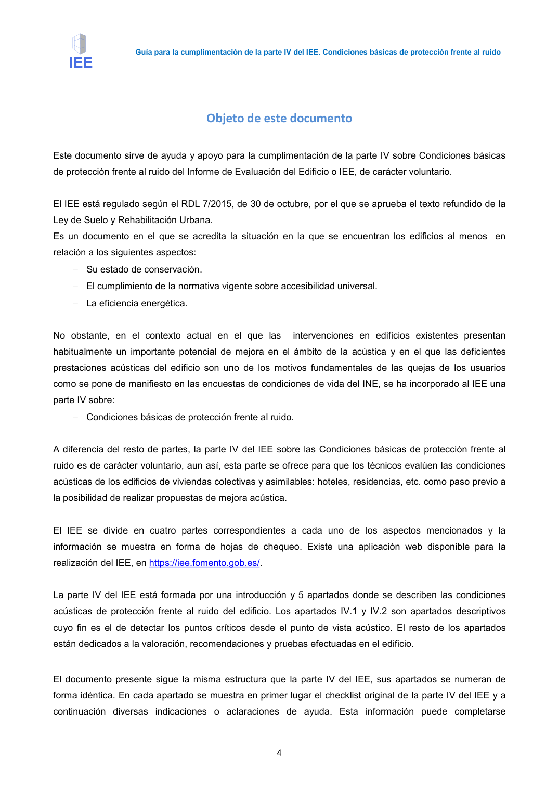
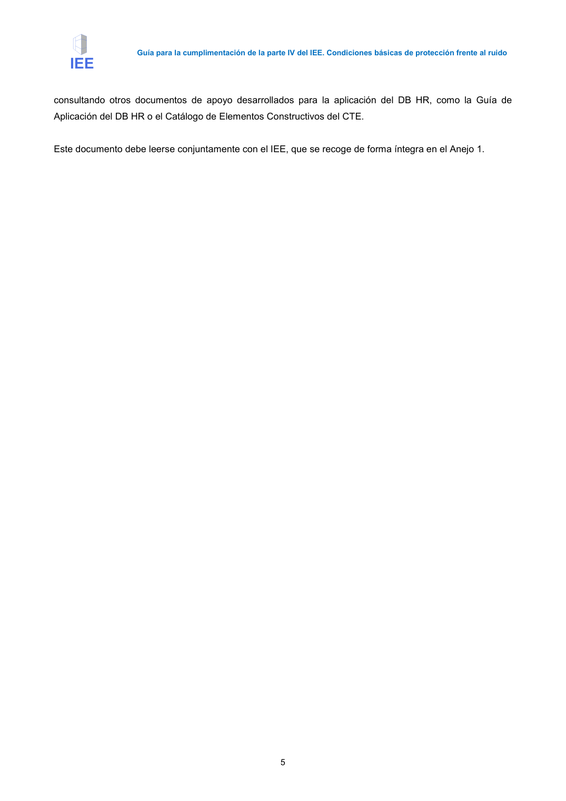

IEE 2016 · edición 2016-11-01 · capa guia
Documento GUIA-PDF-a5d4ef5252ba · SHA-256 del PDF 813669d3066c0ff79457d57b80b0512a4fbb248bc5db1f7baf473c369a064738
Copia fiel del PDF fuente · Fuente oficial
Ficha de la disposición en la fuente oficial
Créditos y autoría en el PDF fuente. Reproducción con cita de fuente y autores.
Permiso literal: Se permite la reproducción del contenido total o parcial de esta Guía siempre y cuando se haga citando la fuente original.
Guía para la cumplimentación de la parte IV del IEE. Condiciones básicas de protección frente al ruido
Dirección y coordinación
Luis Vega Catalán
Mª Cristina Colomo Fernández
Eduardo González de Prado
Dirección General de Arquitectura, Vivienda y Suelo. Ministerio de Fomento
Mª Teresa Carrascal García
Instituto de Ciencias de la Construcción Eduardo Torroja. IETcc- CSIC
Autores
Mª Teresa Carrascal García
Amelia Romero Fernández
Mª Belén Casla Herguedas
Unidad de Calidad en la Construcción del Instituto de Ciencias de la Construcción Eduardo Torroja IETcc- CSIC
Se agradece la colaboración de
Belén Delgado Giménez
Fundación FIDAS
Alberto Esteban González
C.T.O. Estudios y proyectos – Gikesa
Giovanni Muzio
C.T.O. Estudios y proyectos
Francisco Labastida Azemar
Arquitecto, asesor CSCAE
Pedro F. Nogueira López
Universidad de A Coruña
Alejandro Sansegundo Sierra
Acústica SanSegundo
Esta Guía para la cumplimentación de la parte IV del IEE. Condiciones básicas de protección frente al ruido, nace en el marco del
convenio de colaboración llevado a cabo entre el Ministerio de Fomento y el Instituto de Ciencias de la Construcción Eduardo Torroja y
forma parte de la estrategia de este Ministerio de generar una serie de documentos de ayuda que faciliten la aplicación de la normativa
de la edificación y que en este caso concreto, ofrezca a los técnicos criterios para poder realizar una evaluación del estado inicial de las
edificaciones en lo referente a las condiciones acústicas de las viviendas existentes y plantear medidas que incrementen su confort
acústico.
En la redacción de este documento se ha utilizado algunos de los contenidos y de las figuras de la Guía de aplicación del DB HR
Protección frente al ruido. Dicha guía puede consultarse en:
http://www.codigotecnico.org/index.php/menu-documentos-complementarios/menu-guia-aplicacion-db-hr
Se permite la reproducción del contenido total o parcial de esta Guía siempre y cuando se haga citando la fuente original.
2Formatos: JSON del segmento · Markdown
Objeto de este documento Este documento sirve de ayuda y apoyo para la cumplimentación de la parte IV sobre Condiciones básicas de protección frente al ruido del Informe de Evaluación del Edificio o IEE, de carácter voluntario. El IEE está regulado según el RDL 7/2015, de 30 de octubre, por el que se aprueba el texto refundido de la Ley de Suelo y Rehabilitación Urbana. Es un documento en el que se acredita la situación en la que se encuentran los edificios al menosen relación a los siguientes aspectos: − Su estado de conservación. − El cumplimiento de la normativa vigente sobre accesibilidad universal. − La eficiencia energética. No obstante, en el contexto actual en el que las intervenciones en edificios existentes presentan habitualmente un importante potencial de mejora en el ámbito de la acústica y en el que las deficientes prestaciones acústicas del edificio son uno de los motivos fundamentales de las quejas de los usuarios como se pone de manifiesto en las encuestas de condiciones de vida del INE, se ha incorporado al IEE una parte IV sobre: − Condiciones básicas de protección frente al ruido. A diferencia del resto de partes, la parte IV del IEE sobre las Condiciones básicas de protección frente al ruido es de carácter voluntario, aun así, esta parte se ofrece para que los técnicos evalúen las condiciones acústicas de los edificios de viviendas colectivas y asimilables: hoteles, residencias, etc. como paso previo a la posibilidad de realizar propuestas de mejora acústica. El IEE se divide en cuatro partes correspondientes a cada uno de los aspectos mencionados y la información se muestra en forma de hojas de chequeo. Existe una aplicación web disponible para la realización del IEE, en https://iee.fomento.gob.es/. La parte IV del IEE está formada por una introducción y 5 apartados donde se describen las condiciones acústicas de protección frente al ruido del edificio. Los apartados IV.1 y IV.2 son apartados descriptivos cuyo fin es el de detectar los puntos críticos desde el punto de vista acústico. El resto de los apartados están dedicados a la valoración, recomendaciones y pruebas efectuadas en el edificio. El documento presente sigue la misma estructura que la parte IV del IEE, sus apartados se numeran de forma idéntica. En cada apartado se muestra en primer lugar el checklist original de la parte IV del IEE y a continuación diversas indicaciones o aclaraciones de ayuda. Esta información puede completarse Guía para la cumplimentación de la parte IV del IEE. Condiciones básicas de protección frente al ruido 5 consultando otros documentos de apoyo desarrollados para la aplicación del DB HR, como la Guía de Aplicación del DB HR o el Catálogo de Elementos Constructivos del CTE. Este documento debe leerse conjuntamente con el IEE, que se recoge de forma íntegra en el Anejo 1. Guía para la cumplimentación de la parte IV del IEE. Condiciones básicas de protección frente al ruido 6

